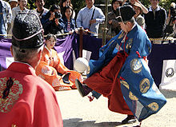

Football is a family of team sports that involve, to varying degrees , kicking a ball with the foot to score a goal. Unqualified, the word football is understood to refer to whichever form of football is the most popular in the regional context in which the word appears. Sports commonly called 'football' in certain places include: association football (known as soccer in some countries); gridiron football (specifically American football or Canadian football); Australian rules football; rugby football (either rugby league or rugby union); and Gaelic football.[1][2] These different variations of football are known as football codes.
Various forms of football can be identified in history, often as popular peasant
games. Contemporary codes of football can be traced back to the codification of these
games at English public schools during the nineteenth century.The expanse of the
British Empire allowed these rules of football to spread to areas of British influence
outside the directly controlled Empire.By the end of the nineteenth century,
distinct regional codes were already developing: Gaelic football, for example,
deliberately incorporated the rules of local traditional football games in order
to maintain their heritage.In 1888, The Football League was founded in England,
becoming the first of many professional football competitions. During the twentieth
century, several of the various kinds of football grew to become some of the most
popular team sports in the world.


The Ancient Greeks and Romans are known to have played many ball games,
some of which involved the use of the feet. The Roman game harpastum is
believed to have been adapted from a Greek team game known as ἐπίσκυρος
(Episkyros)or φαινίνδα
(phaininda),which is mentioned by a Greek playwright,
Antiphanes (388–311 BC) and later referred to by the Christian theologian
Clement of Alexandria (c. 150 – c. 215 AD). These games appear to have
resembled rugby football.The Roman politician Cicero (106–43 BC)
describes the case of a man who was killed whilst having a shave when a ball
was kicked into a barber's shop. Roman ball games already knew the
air-filled ball, the follis.Episkyros is recognised as an early
form of football by FIFA
.

During the early 1860s, there were increasing attempts in England to unify and reconcile the various public school games. In 1862, J. C. Thring , who had been one of the driving forces behind the original Cambridge Rules, was a master at Uppingham School and he issued his own rules of what he called "The Simplest Game" (these are also known as the Uppingham Rules). In early October 1863 another new revised version of the Cambridge Rules was drawn up by a seven member committee representing former pupils from Harrow, Shrewsbury, Eton, Rugby, Marlborough and Westminster.
At the Freemasons' Tavern, Great Queen Street, London on the evening of October 26, 1863, representatives of several football clubs in the London Metropolitan area met for the inaugural meeting of The Football Association (FA). The aim of the Association was to establish a single unifying code and regulate the playing of the game among its members. Following the first meeting, the public schools were invited to join the association. All of them declined, except Charterhouse and Uppingham. In total, six meetings of the FA were held between October and December 1863. After the third meeting, a draft set of rules were published. However, at the beginning of the fourth meeting, attention was drawn to the recently published Cambridge Rules of 1863. The Cambridge rules differed from the draft FA rules in two significant areas; namely running with (carrying) the ball and hacking (kicking opposing players in the shins). The two contentious FA rules were as follows:
Their are so many countries starts playing football those days,and everone
have to make some rules for playing football.So, the final solution they found
is everone make their own rule for football.....e.g
Their are so many types of football earlier people plays and today genration are playing and now a days football become hot streak.
Types of football they are playing
Now football is popular sport among all sport except cricket or offenly football beat it.After look out the trending of football they started making football game and as in result they got good response, they started making more advancement in it. These game when getting more popoularity they make more more inhancement and now they are avaliable various opratents.e.g